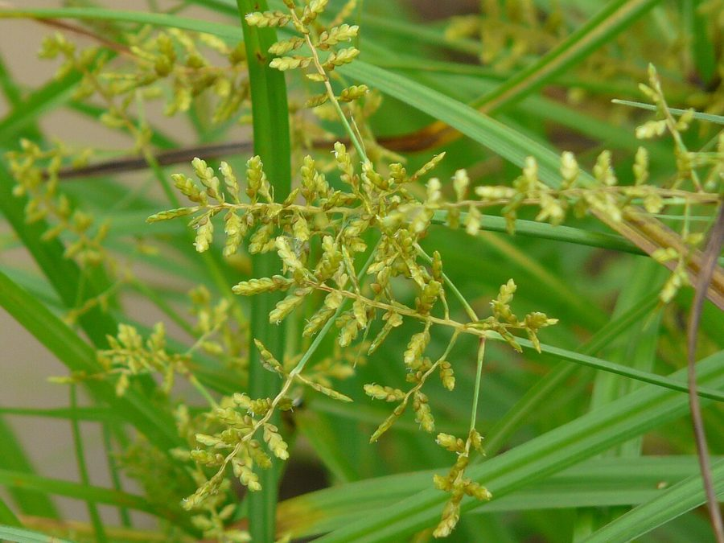

छतरी मोथाRice Flatsedge
Cyperus iria · Cyperaceae · FLR-0176

- Scientific name
- Cyperus iria L.
- Family
- Cyperaceae
- Hindi
- छतरी मोथा
- Local names
- chhatri motha, chhatri, motha ghas, rice flatsedge
- Status here
- native
- Movement
- Resident, here all year
- IUCN
- not evaluated
- Review
- audited and independently read
When to look कब देखें
Expected mainly in June, July, August, September, October.
Uses and possibilities उपयोग और संभावनाएँ
“Traditional medicine” means a documented traditional use, not a claim that it works. Nothing on this page is medical advice.
Drawn from the documented uses in the profile below, where each is labelled traditional, current or a research lead. All uses →
छतरी मोथा / Rice Flatsedge
Cyperus iria L. — Cyperaceae
छतरी मोथा (अंब्रेला मोथा, चातरी, इरिया) — धान के खेतों में सबसे आम खरपतवार, जो जुलाई-अगस्त में बहुतायत से निकलता है। पतली, सीधी तने, 30-50 सेंटीमीटर ऊँचे, जिनके ऊपर छतरी जैसे फूल। पत्तियाँ बहुत संकरी, घास जैसी। खेत में पानी हो तो यह घास खूब फैलती है। अगर इसके बीज धान की फसल में मिल जाएँ तो धान की गुणवत्ता खराब हो जाती है। पर इसे पशुओं के लिए अच्छा चारा भी माना जाता है।
Quick Identification त्वरित पहचान
| Feature | Description |
|---|---|
| Plant form | Annual sedge, 20–50 cm tall, tufted, arising from water or wet soil |
| Stems | Slender, angular (triangular in cross-section), unbranched, smooth |
| Leaves | Basal, very narrow (1–2 mm wide), linear, grass-like |
| Inflorescence | Umbel-like clusters of 6–10 brown or reddish spikelets |
| Spikelets | Small, 5–8 mm, flattened, with 8–15 florets arranged in two rows |
| Seeds (achenes) | Very small, lens-shaped, light brown |
| Roots | Fibrous, adventitious from nodes; shallow in water |
Field tip: In wet rice paddies and water margins, look for clusters of slender, grass-like plants with distinctive umbrella-shaped flower clusters (inflorescences) of small brown spikelets at the stem tops. The plant occurs in patches in waterlogged fields.
Morphology आकारिकी
Biometrics (typical measurements in flooded rice paddies, eastern India):
| Measurement | Range |
|---|---|
| Plant height | 20–50 cm |
| Leaf width | 1–2 mm |
| Inflorescence diameter | 3–6 cm |
| Spikelet length | 5–8 mm |
| Achene (seed) length | 1–1.5 mm |
Root system: Fibrous, adventitious roots; capable of rooting from lower nodes if the plant is partly submerged.
Stem (culm): Slender, triangular in cross-section (a characteristic of sedges), smooth, unbranched, arising from a rhizomatous base.
Leaves: Basal or nearly basal, very narrow (1–2 mm), linear, grass-like, with a prominent midrib and entire margins.
Inflorescence: An umbel-like cluster of 6–10 (sometimes up to 12) brown or reddish spikelets, arranged radiating from a common point on the stem top. Involucral bracts (leaf-like structures) subtend the inflorescence. The flower color is brown, tan, or reddish.
Spikelet structure: Each spikelet is small, flattened dorsally, with 8–15 florets arranged in two ranks. The glumes (outer scales) are keeled and typically reddish-brown.
Seeds: Very small, lens-shaped or trigonous (three-sided), light brown, easily dispersed by wind and water.
Associated Species / Interactions संबंधित प्रजातियाँ
- Host crop: Infests Paddy paddies and other wetland crops.
- Associated weeds: Often found with dayflower (Commelina benghalensis) and other rice-field weeds.
- Seed dispersal: Dispersed by wind, water flow in irrigation systems, and contaminated rice seed.
Life Cycle / Phenology जीवन चक्र
| Month / Season | Event |
|---|---|
| May–June | Seed germination in wet soil; seedling emergence |
| June–August | Vegetative growth and tiller development; rapid increase in wet conditions |
| August–September | Flowering; spikelet maturation |
| September–October | Seed maturation and ripening; seed shed into water and soil |
Seeds germinate readily in waterlogged conditions after the monsoon begins. Maturity is rapid: 60–80 days from germination. Multiple seed flushes occur throughout the monsoon season if water conditions persist.
हिंदी: मई-जून में अंकुरण, जुलाई-अगस्त में तेज़ी से बढ़ना, अगस्त-सितंबर में फूल और बीज।
Pests and Diseases कीट और रोग
- No specific pests or diseases recorded.
- The plant is hardy and thrives in waterlogged conditions where most other plants struggle.
Agricultural / Human Relevance कृषि प्रासंगिकता
The weed problem: Cyperus iria is one of the most common and persistent weeds of rice cultivation in South Asia. In flooded paddy fields, the weed emerges with or shortly after the rice crop. The plant is particularly troublesome because it competes vigorously with rice for light, nutrients, and water. The underground propagules (small tubers and seeds) persist in soil for years, and flooding, which suppresses many weeds, actually favors flatsedge germination.
Seed contamination: The small seeds of Cyperus iria are similar in size to rice and can be difficult to separate during threshing and winnowing. Contaminated rice seeds are considered undesirable and reduce grain quality for market sale.
Control methods:
- Manual weeding: Hand-pulling in the early growth stage is effective but labor-intensive.
- Mechanical: Repeated ploughing and harrowing helps reduce populations.
- Herbicidal: Herbicides such as propanil (for rice tolerance) and other sedge-specific herbicides are used. However, resistance is reported in some regions.
- Cultural: Crop rotation out of rice, soil drainage improvement between crops, and early crop establishment (timely seeding or transplanting) help suppress the weed.
Fodder use: Despite being a weed in rice cultivation, Cyperus iria is nutritious and palatable to cattle and is collected in some regions as green fodder or dried for winter feeding. The plant is also reported to have medicinal properties in traditional systems.
हिंदी: धान के खेतों में सबसे बड़ी समस्या। बीज छोटे होते हैं, धान के साथ मिल जाते हैं। मैनुअल निकालना या रासायनिक दवाई से नियंत्रण। पर पशुओं के लिए अच्छा चारा भी है।
Expected Locally स्थानीय रूप से अपेक्षित
Not a field record. Written from published accounts for eastern Uttar Pradesh. No confirmed local sighting yet — if you have seen it, that is what the atlas needs.
अभी तक स्थानीय पुष्टि नहीं। यह विवरण प्रकाशित स्रोतों से है, किसी अवलोकन से नहीं।
Almost certainly present in rice paddies throughout Basti district during the monsoon and early post-monsoon season (June to October). The distinctive umbrella-like inflorescences in flooded rice paddies are easily recognizable.
Distribution वितरण
Global range: Native to tropical Asia; now distributed throughout tropical and subtropical rice-growing regions worldwide.
In India: Widespread in all rice-growing areas of the Indo-Gangetic plain and southern states.
In Uttar Pradesh: Common to very common in all rice-growing regions.
In Basti district / eastern UP: Common to very common in all rice paddies during the monsoon and early post-monsoon season.
Research Questions शोध प्रश्न
Anyone can investigate these | कोई भी इन प्रश्नों की जाँच कर सकता है
- How many chhatri motha seeds are produced from one plant, and how deep can they germinate from in soil? — Harvest mature plants; count seeds; test seed burial depth and germination.
- Can hand-weeding at the 2–3 leaf stage followed by one herbicide spray reduce yield loss more than spray alone in rice? — Set up a small trial with different treatments; measure rice yield.
- Which herbicide spray is most effective against chhatri motha in rice, and does resistance exist in local populations? — Talk to local farmers; compare herbicide results.
- Can chhatri motha be used as fodder, and what is the nutritional value compared to other wet-field sedges? — Harvest and dry the plant; test palatability to cattle.
- Does puddling (pre-harvest soil preparation with water and tillage) reduce chhatri motha populations compared to direct seeding of rice? — Compare puddled vs. direct-seeded rice; count weed populations.
Similar Species मिलती-जुलती प्रजातियाँ
| Species | How to tell apart | हिंदी |
|---|---|---|
| Cyperus rotundus (Purple Nutsedge / Motha) | Purple or dark brown spikelets; underground tubers more developed; larger plant | बैंगनी मोथा — बैंगनी फूल, कंद |
| dayflower (Commelina benghalensis) | Blue flowers; broader leaves; different inflorescence structure | कमली — नीले फूल, चौड़ी पत्तियाँ |
| Annual sedges (Fimbristylis spp.) | Brown spikelets in compact bristly heads; narrower inflorescence | अन्य मोथा — अलग बनावट |
Field rule: A slender sedge in flooded rice paddies with very narrow, grass-like leaves and distinctive umbrella-like clusters (umbels) of 6–10 small brown spikelets at the stem top is Cyperus iria.
Taxonomy & Classification वर्गीकरण
Original description. Described by Carl Linnaeus in 1753. The genus name Cyperus is derived from the Greek kupeiros, an ancient name for a sedge plant. The specific name iria is of unclear etymology, possibly from a local name.
Subspecies. Monotypic — no subspecies are currently recognised.
Family and order placement. Cyperaceae, order Poales. The family includes all sedges, distinct from grasses (Poaceae) in having triangular stems and different flower structures.
Phylogenetic notes. Cyperus iria is related to Cyperus rotundus (purple nutsedge) and other Cyperus species. The genus contains about 600 species, distributed globally, mostly in tropical and subtropical regions.
IUCN status rationale. Not evaluated. Common and invasive in rice systems; not assessed for conservation status.
Photo Gallery फोटो गैलरी
Photos needed आवश्यक फोटो
- [ ] Plant growing in water showing whole plant with umbrella-like inflorescence (पूरा पौधा)
- [ ] Close-up of inflorescence showing spikelets (फूल का विस्तार)
- [ ] Mature ripened spikelets (पके फूल)
- [ ] Comparison with rice plants in the same paddy (धान से तुलना)
No photos yet — add field photos to media/species/cyperus_iria/ and run node scripts/sync_photos.js.
References संदर्भ
- Linnaeus, C. (1753). Species Plantarum. Laurentii Salvii, Stockholm, Vol. 1, p. 68.
- Hooker, J.D. (1894). Flora of British India, Vol. 6. L. Reeve & Co., London.
- Indian Council of Agricultural Research (2021). Handbook of Agriculture. ICAR, New Delhi.
- Chauhan, B.S. & Johnsons, D.E. (2008). Comparative phenology of different rice (Oryza sativa)-weed species grown in Southeast Asia. Journal of Agronomy and Crop Science 194(3): 384–394.
- Botanical Survey of India. State Flora Series: Flora of Uttar Pradesh. BSI, Kolkata.
- GBIF Occurrence Data — Cyperus iria, India (2015–2026).
Source file: species/flora/crops_associated/cyperus_iria.md